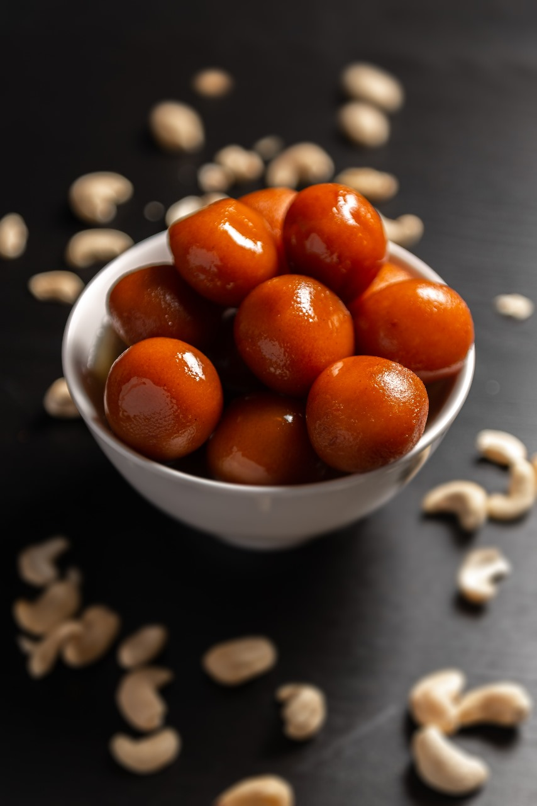
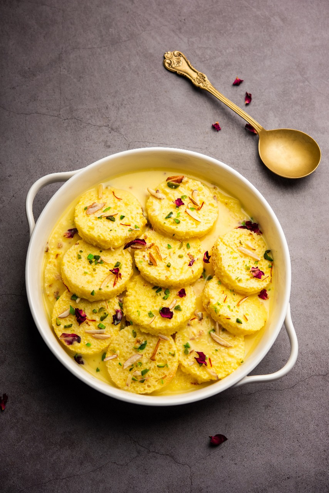
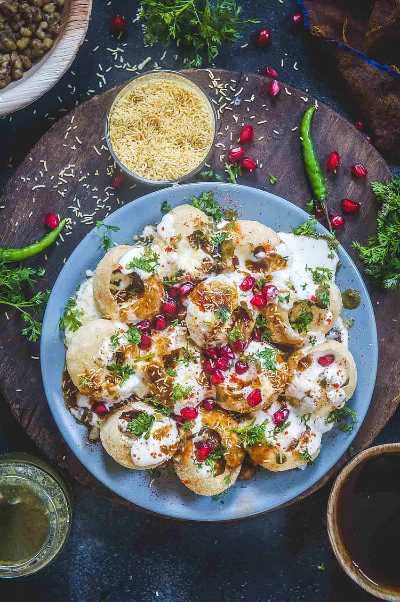

gulab Jamun
Ingredients
- 1 cup of milk powder
- 1/4 cup of milk
- 1/4 cup of ghee (clarified butter)
Recipe
- In a mixing bowl, combine milk powder and ghee.
- Gradually add milk and knead the mixture into a soft dough.
- Divide the dough into small portions.
- Heat oil in a pan and deep-fry the dough balls.
- Prepare sugar syrup by dissolving 1 cup of sugar in 1 cup of water.
- Add the fried Gulab Jamun to the syrup, soak for a few hours

Bread Rasmalai
Ingredients
- 4 slices of bread
- 2 cup of milk
- 1/2 cup of condensed milk
Recipe
- Remove the crust from the bread slices
- cut them into small pieces.
- In a pan, heat the milk and condensed milk together
- Add the bread pieces to the milk mixture .
- cook for 5-7 minutes until it thickens further and the bread softens
- Let it cool, then refrigerate. Serve chilled as Bread Rasmalai.

Samosa
Ingredients
- 2 cups of all-purpose flour (maida)
- 2 tablespoons of oil
- 2 cups of boiled and mashed potatoes
- 1/2 cup of green peas
- 1 teaspoon of cumin seeds
- 1 teaspoon of garam masala
- 1 teaspoon of coriander powder
- salt to taste
Recipe
- In a bowl, mix the all-purpose flour, oil, and a pinch of salt.
- Add water to make a dough. Cover and let it rest for 30 minutes.
- In a pan, heat a little oil, add cumin seeds
- then add the mashed potatoes and spices.
- Cook until the mixture is well combined and fragrant.
- Divide the dough into small balls and roll each into a thin oval shape.
- Cut it in half to form two semi-circles.
- Take one semi-circle, fold it into a cone, and seal the edges with water.
- Fill it with the potato mixture then seal the open edges.
- Heat oil for deep frying, and fry the samosas.
Dahi Puri
Ingredients
- Puri shells (store-bought or homemade)
- 1 cup of plain yogurt (curd)
- 1/2 cup of tamarind chutney
- 1/2 cup of boiled and mashed potatoes
Recipe
- Take the puri shells and gently crack the top to create an opening.
- Fill each puri shell with a small amount of mashed potatoes.
- Top the potatoes with a spoonful of plain yogurt (curd).
- Drizzle tamarind chutney over the yogurt-filled puris.
- Garnish with a pinch of chaat masala or black salt, if desired.
